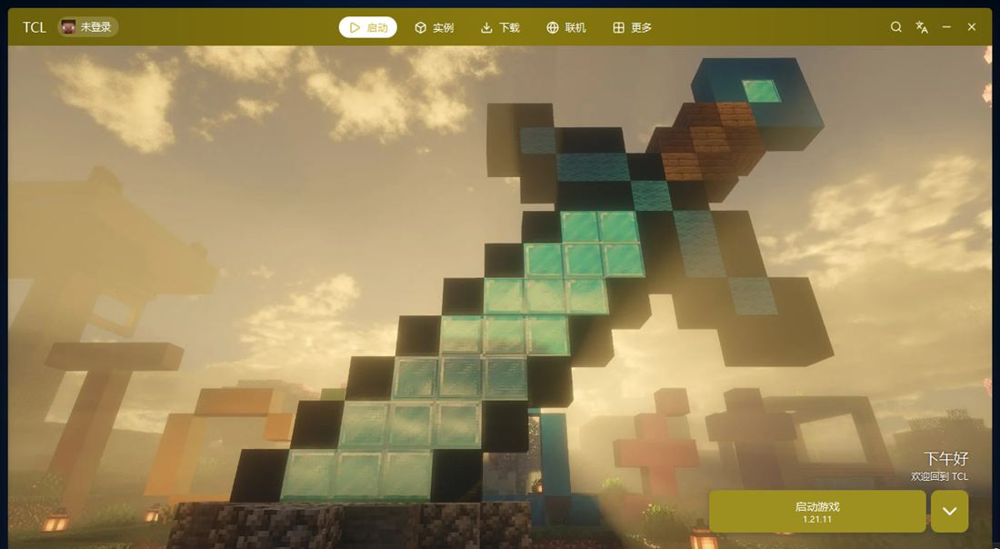
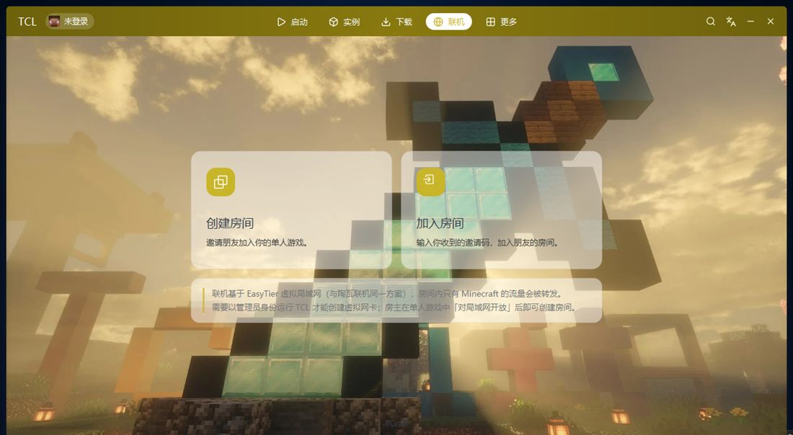

启动器还在开发中，有些功能没做完，个别设置可能不生效。遇到问题或有建议， 到 GitHub 提 Issue， 或者加 QQ 群 1131373915。






卡片化布局与 Win11 风格的半透明界面。壁纸、背景视频、音乐和主题色都支持自定义。
内置 Microsoft 登录与第三方认证服务器支持，兼容 Yggdrasil Connect 的 OAuth 登录流程规范提案，登录后支持 3D 渲染皮肤
基于 EasyTier 虚拟局域网，创建房间后把邀请码发给朋友就能联机，无需公网 IP。
支持多个游戏目录与实例，集中管理所有实例资源（如存档、模组、资源包、光影包、截图等）与设置。
TCraft Launcher 可在以下平台运行
 Windows
Windows
 macOS
macOS
 Linux
Linux